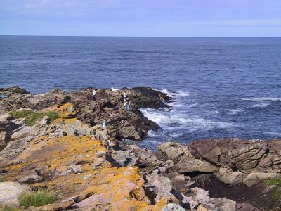

Lots of pics of this day of the tour are here.previous day next dayThis morning was the time for goodbyes. We said farewell to Greta and gave Sue and Neil our hearty thanks for a nice tour. This was Simon's first bike tour, and it had gone very well.
It was cloudy and cool when we set off from Strathpeffer. Our general plan was to head east, and go as far as we wanted, then find a B&B and stop for the night.
Our first stop was to see Tulloch Castle, which turned out to be a hotel/restaurant. From there we took a small road that paralleled the A862. This involved quite a climb at first, but we were rewarded with splendid views of the Cromarty Firth, complete with structures that looked like oil rigs, although we weren't quite sure what they were doing so close to shore.
We went through Alness, in which everything was closed, as it was Sunday. We wondered where we'd be able to get some lunch. We went on to Invergordon, where we found only one lunch place open, a hotel/restaurant. We got a decent, very filling lunch there, and continued on.
From Invergordon we headed towards Tain. Here we had the usual nice Scottish scenery, with hills, trees, and wildflowers. As we neared Tain, Simon began we get an urge for ice cream, and we vowed we'd get something in Tain. However, we were thwarted: we didn't find anything open that had ice cream, not even a small grocery shop! So we went on. I'd seen a lighthouse to the northeast, at Talbot Ness, and I convinced Simon to go see it.
From Tain the scenery took on an appearance surprisingly like the area around Cambridge: very flat and agricultural. The main difference was the view of the sea and, beyond that, high hills. Also, there was a mysterious, large, brightly lit red rectangle near the shore.
This area was very desolate. All we saw were a few farms. There were a few villages marked on our map, but none seemed to exist in real life. The only thing that seemed to remain of one of them was a cluster of abandoned buildings in various states of disrepair in a sheep field.
 Tarbat Ness Finally we reached a B-road and turned left toward the lighthouse. First we went through the pretty village of Portmahomack. The sun had come out by now, although it was still quite cool. We stopped at a coffee shop for tea and raspberry ice cream. There we shared a table with a nice local retired Scottish couple who were out enjoying the good weather.
Finally refuelled, we headed out to Tarbat Ness. We found the lighthouse all right; it was a standard tapering cylinder with red and while stripes. We saw a path leading behind it an decided to see where it went. It lead to a rocky point, with waves crashing against it. There was an information board up about seals, but sadly no seals in sight. We hung around here for awhile, taking pictures and enjoying the view. We got to talking to some locals, who recommended the Balintore Hotel, which was about 10 miles away just as you enter the village of Balintore.
So we rode there, found the hotel, and happily they had a room available (actually, it turned out, we were the only people staying in the hotel!), 18 pounds per person per night, including breakfast. Not bad. Or room was huge, and had a great view of the sea, although it was a bit lacking in furniture. It was also lacking in light: the over head lights didn't work, and one of the bedside lights had a blue bulb that gave out very little light. We complained about the overhead lights to the person on duty, and she said she'd get the boss to fix it when she returned. So we asked to swap the blue bulb for an ordinary one, and that gave us enough light.
When we arrived there was a guy in the bar playing the accordion, which we could hear quite clearly as our room was just above the bar. He was accompanied by some very drunk-sounding vocalists. By the time we finished our baths he'd stopped and it was much quieter, although there was still plenty of noise from talking.
We had dinner in the hotel bar, then went for a stroll along the waterside. We wanted to go to bed around 11pm, which was the time the bar shut. However, the noise continued. Gradually it died down and we went to sleep.
Miles for today: 55.